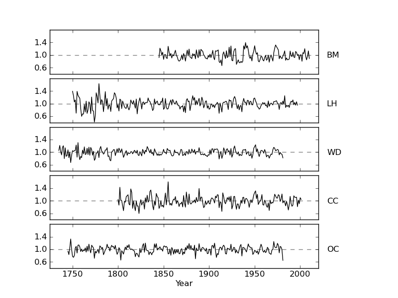
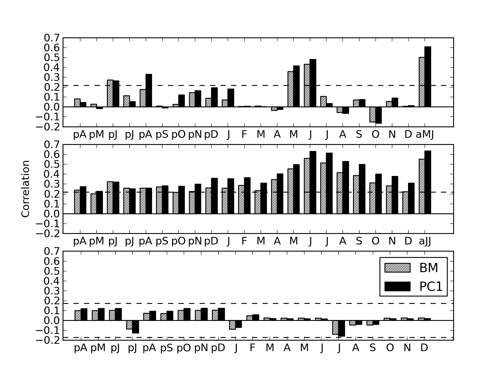
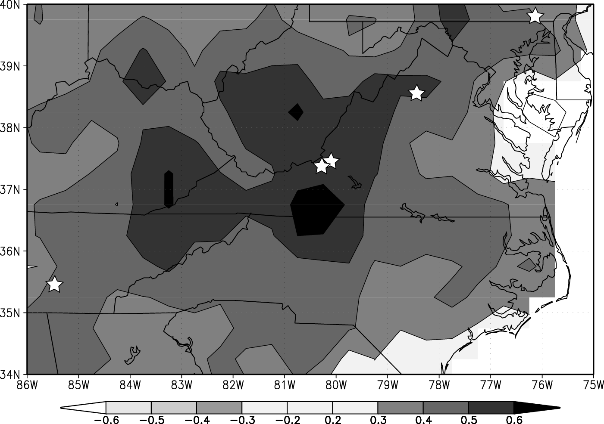
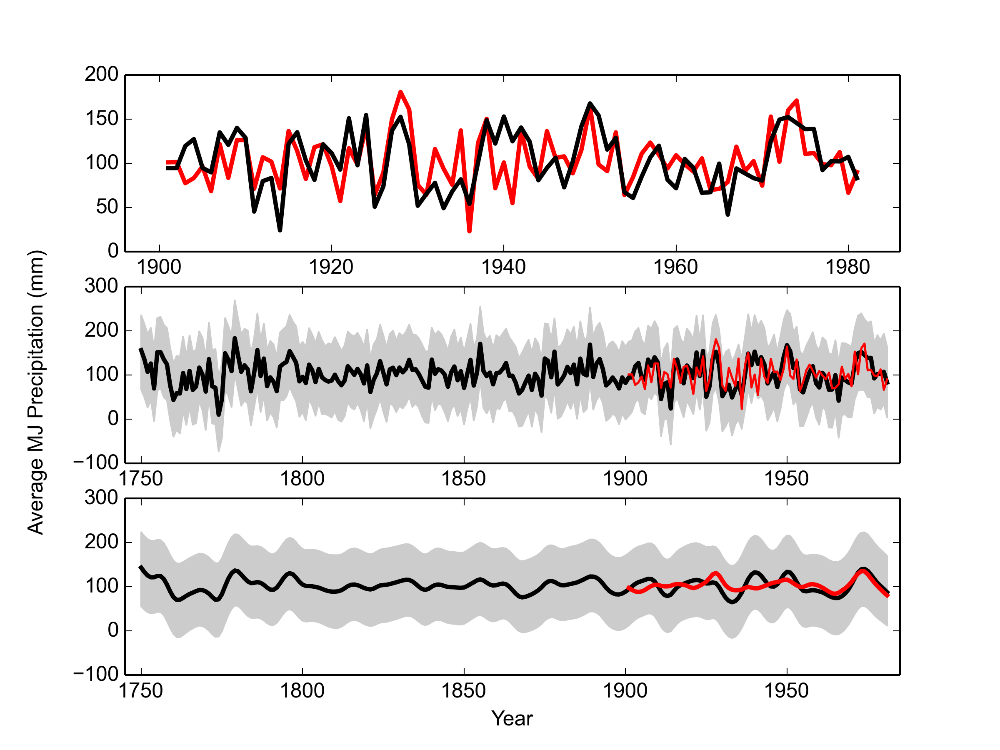
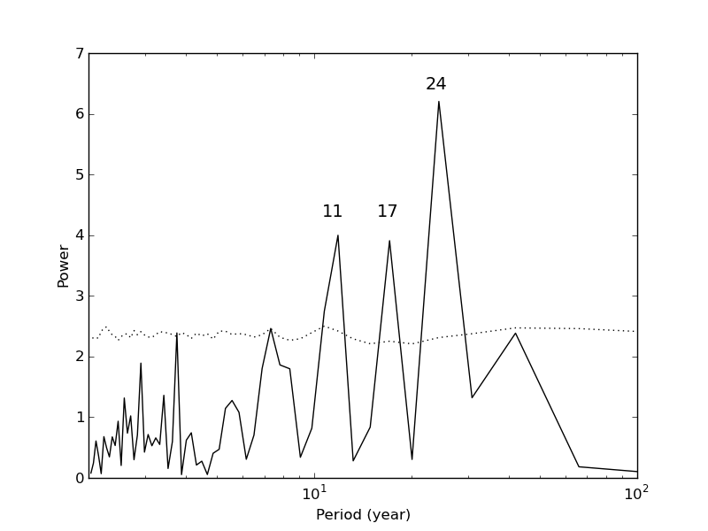
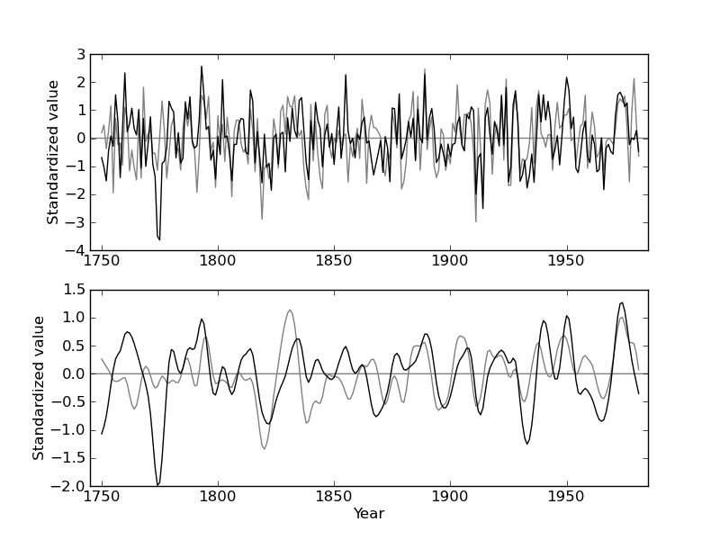

In a closed-canopy forest, stand dynamics play an important role in shaping the forest, and it has been hypothesized that dense forests are not sufficiently limited by climate to warrant climate reconstruction. We collected Quercus prinus tree-ring data from a dense forest in the Appalachians, and after removal of stand dynamics and age trends we find strong correlations between annual tree growth and early summer precipitation. To strengthen the climate signal, we include additional southeastern US Quercus prinus chronologies in a nested principal component analysis (PCA). Correlation between the growth proxy and early summer precipitation was increased through PCA, and assessment of reconstruction skill was favorable. The reconstruction was modeled using a Bayesian regression model, which allowed uncertainty to be quantified. The reconstruction covered the period 1750-1981, and extended the instrumental record by 150 years. The reconstruction showed key drought years identified by others, as well as 11-year periodicity.
The Southern Appalachian region is one of the most biologically diverse temperate forest systems. This region has supported continuous forest communities longer than any other area on the North American continent, and hosts many rare, endemic species [1]. Additionally, it harbors many disjunct species populations. The southern Appalachians also provide ecosystem services such as carbon storage, watershed and water quality protection, and serve as a timber source [2]. In order to protect these valuable resources, it is crucial that we understand the past climate of this area and how it has influenced the many ecosystems within the region. Understanding this past climate-ecosystem relationship will enable scientists and landowners to better manage natural resources in a our current changing climate.
Global circulation models project an increase in average global surface temperatures of 1.0 - 3.5∘C by the end of this century due to continued increases in greenhouse-gas emissions [3, 4]. However the influence of increased radiative forcing on precipitation regimes is not well understood, and this is particularly the case for the southeastern United States (US). The 24 models used to make predictions about climate change in the Intergovernmental Panel on Climate Change Fourth Assessment Report were not in consensus with respect to drought frequency in this region [3, 5]. Uncertainty in climate projections makes it difficult to predict water and power usage. The ability to do so is crucial because the southeastern US has experienced substantial increases in population and energy consumption, over the last decade [5, 6]. It is important that the public and planners in the Southeast have access to information regarding climate change projections and mitigation. Through the use of tree-ring based climate reconstructions, we can better understand past precipitation regimes at both decadal- and centennial time-scales and improve projections of future precipitation patterns.
In order to reduce uncertainty in climate model projections and to extend meteorological records further back in time, tree-ring data are commonly used as regional proxies, particularly in regions where drought (e.g. the American Southwest, [7]) or summer temperature (e.g. the European Alps, [8]) is the limiting tree growth factor. However, tree-ring data have also successfully been used for climate reconstructions in the eastern US [9–11]. Traditionally it has been understood that trees in a closed-canopy forest are not limited by climate to the same extent as trees growing on the forest border [12]. Within a dense forest, stand dynamics play an important role in shaping the forest structure through their influence on radial tree growth and tree survival. As these interactions between individuals increase in strength, the climatic influence on tree growth becomes less dominant.
Trees growing in temperate regions characterized by high humidity, such as those in the Southeast US, are typically thought to be less sensitive to climate than trees in semiarid regions [13]. This belief supports the idea that the degree to which an environmental factor is limiting affects the amount of variability in that factor that is seen in tree-ring time series.
Despite the challenges of finding a strong climate signal in tree-ring time series in southeastern US forests, numerous studies have identified climate-growth correlations [14–16]. For example, Pan et al. [14] showed that after tree-ring standardization, both annual ring-width and basal area increments of four deciduous species in Virginia were positively correlated with precipitation from both the prior summer, autumn, and current summer. They also report negative correlations with air temperature of the current growing season. Speer et al. [15] found similar correlations between precipitation and temperature and annual tree growth for oak chronologies from closed canopy forests in the Southern Appalachian Mountains.
In this study, we determine the presence of a significant relationship between chestnut oak growth series in the eastern US and early summer precipitation and ascertain the viability of a climatic reconstruction based on the chestnut oak growth series as proxy data. The annual growth proxy data was subsequently used to reconstruct early summer precipitation using Bayesian methods. Finally, we evaluated the reliability of the reconstruction by comparing it to other verified regional reconstructions.
The study site was an Upland Oak-Pine forest located on the north facing slope of Brush Mountain in South-West Virginia (37∘ 22.2’ N, 80∘ 14.8’ W), with a site elevation of 558 m (BM in Figure 1). This region is classified as either humid continental or mountain temperate, and characterized by warm, humid summers and winters that are predominantly cool with intermittent warm spells. The mean annual precipitation from 1901-2010 at the nearby Blacksburg weather station was 1073 mm, while the mean annual temperature was 10.9∘C.
The study site supported older chestnut oak (Quercus prinus) trees amongst a canopy of many species, including scarlet oak (Quercus coccinea), northern red oak (Quercus rubra), red maple (Acer rubrum), Virginia pine (Pinus virginiana), pitch pine (Pinus pungens), and eastern white pine (Pinus strobus). Site access was adjacent to the Appalachian trail, although the site was selected to minimize human interference. The steepness of this slope suggested that climate may be a limiting growth factor, although the closed canopy and stand density suggested that stand dynamics may also play a significant role in shaping the forest structure [12].
We sampled 56 chestnut oak trees and collected two increment cores per tree. Samples were dried, mounted, and sanded according to standard procedure [17]. Crossdating was performed using reflected light microscopy and the list method, which facilitates the identification of marker years that signify relatively favorable or unfavorable growth years in a stand [18]. All samples were measured using a LINTAB measurement stage with 0.01mm precision, and visual crossdating was checked using COFECHA [19]. We used inter-series correlation, a measure of stand-level signal, and mean sensitivity, to select a total of 76 tree-ring series from 53 trees to be used for site chronology development.
Non-climatic age and stand dynamics related trends were removed from the individual tree-ring series using smoothing splines with a 50 % cutoff at 50 years using ARSTAN software [20]. This method allowed us the flexibility to remove the episodic-like interaction effects from the time series, while retaining the high-frequency climatic variability. Note that as with any filtering technique, inevitably some portion of the climatic signal will be lost through the removal of these non-climatic trends [21]. We here assume that the loss of climatic signal was negligible, and comparison of the detrended time series with climatic data ultimately determined if the strength of the remaining signal was sufficient to perform further analyses. The Brush Mountain site chronology was then developed based on the individually detrended tree-ring width time series, and will hereafter be referred to as BM.
We also computed the expressed population signal (EPS) to measure the common variability in our chronology at an annual resolution. EPS depends on both signal coherence and annual sample-depth, and EPS values which fall below a predetermined cutoff (0.85) indicate that the chronology is not dominated by a coherent signal, and is therefore deemed less than ideal for climatic reconstructions [24].
Although water access may not be limiting in southeastern US sites, a large sample size may compensate to help identify the common climate signals despite site and individual variability. In regions that are subject to site heterogeneity, where significant climatic variance cannot be identified for a standard sample size, principal component analysis can be an effective means to overcome the lack of strength of climate signal [25–27]. Through the application of principal component analysis (PCA), tree-ring data collected from a network of regional sites can be combined to reduce site level noise through the identification of a common climate signal across sites.
Tree-ring data from 8 eastern US Quercus prinus sites were downloaded from the International Tree-Ring Database (ITRDB; http://www.ncdc.noaa.gov/paleo/treering.html) and were considered for inclusion in a PCA analysis. For each of the eight sites, individual ring-width time series were detrended using a smoothing spline with 50% cutoff at 50 years [21], and subsequently used to develop site chronologies. Chronology reliability for each of the 8 chronologies was assessed based on the mean sensitivity, inter-series correlation, EPS, and the first-order autocorrelation. Furthermore, only chronologies which extended back to at least 1845 (the length of the BM chronology) and significantly correlated with regional precipitation anomalies (see below) were retained for further analysis. Four Quercus tree-ring chronologies (3 Quercus prinus and 1 Quercus alba) met these conditions (Table 1,Fig. 2), and all covered the time interval 1845-1981, while some extended further back in time. To make use of the of the chronology lengths which extended to years prior to 1845, chronologies were combined with the BM chronology in a nested singular value decomposition PCA [28, 29]. The first PCA included 5 contributing chronologies that covered the 1845-1981 time interval, while the second PCA included 3 contributing chronologies that covered the 1750-1981 time interval. In each PCA, the components with eigenvalues larger than one were retained for further analysis, and the components explaining the largest amount of common variance in the tree-ring chronologies were included in a climate correlation analysis. The PCAs resulted in two potential reconstructions: one covering the 1845-1981 interval, and one covering the 1750-1981 interval. Each reconstruction has its own set of skill and accuracy statistics, as described in 2.5. The final reconstruction is a combination of segments from the two principal components: 1750-1844, and 1845-1981.
Monthly precipitation sum, average temperature, and average Palmer Drought Severity Index (PDSI) [30] averages were computed from daily measurements at the Blacksburg climate station (37∘ 12’ N, 80∘ 24’ W; elevation 634 m; 1901-2006) and were used in a correlation function analysis with the tree-ring time series. Pearson’s correlation coefficients were calculated for all months starting in April of the year previous to the growing season through current December, as well as for various seasons (Apr-June, July-Sep, Oct-Dec, Jan-Mar) and annual means.
Average May and June precipitation, and average June and July PDSI showed the strongest correlation between the Blacksburg station and the BM chronology. These correlations were then used as guidance for a spatial correlation analysis between the first principal component and a gridded (0.5∘× 0.5∘) monthly climate data set for the period 1901-2006 [CRUTS3.10; 31]. Spatial correlations were calculated using the KNMI explorer [32, ; http://climexp.knmi.nl]. The grid point showing the strongest correlation with the principal component tree-growth proxy was then selected as a target for reconstruction. We highlight that although our reconstruction is determine for a single point, this reconstruction is representative of the climate in the surrounding region as a result of being constructed from a PCA on growth series from sites spatially distributed around this point.
Precipitation was modelled using a Bayesian linear regression model, with the principal component growth proxy (covering the period 1750-1981) as a predictor. The precipitation model is written as
| yt | ~ Normal(μt, σ2) | (1) |
| μt | = β0 + β1xt, | (2) |
To assess the accuracy of the modeled precipitation anomalies, we used a split-period (1901-1941 and 1941-1981) calibration. Both the 1901-1940 and 1941-1981 periods of climate data were used in turn as the calibration period (denoted by yt in 1), to determine if the accuracy of the reconstruction was sufficient to warrant further analysis. Data from the period not used for calibration served as verification data, and for both calibration/verification pairs we computed the mean squared error (MSE), reduction of error (RE) [12], coefficient of efficiency (CE) [33], and the squared correlation (r2) (See the National Research Council report Surface Temperature Reconstructions for the Last 2,000 Years [34] for further details on assessing reconstruction skill).
We compared our precipitation reconstruction to six published regional precipitation and drought reconstructions as external validation (Table 5). One drought reconstruction was obtained from the North American Drought Atlas (NADA) [11] which is a gridded reconstruction of PDSI values for June through August. The second drought reconstruction was a July PDSI reconstruction (JT) for Virginia and North Carolinian coastal regions [35]. The remaining four reconstructions identified for comparison were precipitation reconstructions for the North Carolina (NC), South Carolina (SC), and Georgia (GA) regions for the months of April though June for NC, and March through June for SC and GA [36], and one reconstruction for early summer anomalies for the Montpelier region (MP) [37].
Reconstructions that were significantly correlated with our final precipitation reconstruction were compared using 31-year windowed correlation plots, which facilitated the identification of periods of pattern dissimilarity.
Furthermore, we used a spectral wavelet analysis to identify dominant cyclical behavior in our reconstruction [38]. Spectrum values were averaged with 2 frequencies per bin to simplify interpretation.
The BM chronology covered the period 1764-2010 CE, had an interseries correlation of 0.556 and a mean sensitivity of 0.208 (Table 1). The EPS was above the 0.85 cutoff for 1845-1981 and thus we used the chronology over this period. A spatial correlation analysis between considered climate variables and BM identified the grid point 37.5 - 38∘ N., 80.5 - 81∘ E. as the location that correlated most highly with our chronology. The BM chronology was significantly positively correlated with monthly PDSI values from April of the previous year to December of the current year (Fig. 3B), except for previous May and previous October. We found particularly strong correlations between BM and monthly PDSI over the May through August growing season, with the highest correlation being with average June and July PDSI (jjPDSI; r = 0.55, p < 0.01). Furthermore, we found significant, positive correlations with precipitation of the previous year June and current year May and June (Fig. 3A). When averaging monthly precipitation values over the months May and June (mjPR), correlation increased to r = 0.5 (p < 0.01). The BM chronology did not correlate with monthly temperature values (Fig. 3C).
Based on this climate-growth analysis, mjPR and jjPDSI were considered as candidate targets for reconstruction. An assessment of the calibration/verification statistics for a reconstruction based on the BM chronology alone (results not shown), however, suggested that the climate signal was not sufficient to warrant adequate reconstruction skill. We therefore combined the BM chronology with four existing oak chronologies from nearby sites (Fig. 1, 2) in a nested PCA approach. All four chronologies were significantly positively correlated with the mjPR and jjPDSI values from the monthly data set obtained from the spatial correlation analysis.
The first PC axis (PC1) of a PCA performed on all five chronologies for the period of overlap 1845-1981 explained 57.0% of the common variance, while the second axis explained 15.2%. All oak chronologies had the same sign on PC1, thus emphasizing the correspondence between the time series. We then performed another PCA including only the three chronologies which extended back to the year 1750 (LH, WD, OC). PC1 over this longer period explained 56.0% of the common variance and PC2 explained 28.3%. We then merged the PC1 time series of the two PC analyses (which were strongly positively correlated; r = 0.93, p < 0.01) at the year 1845 (PCA2: 1750-1844, PCA1: 1845-1981) to form a single chronology extending from 1750 to 1981. This chronology will from hereon be named SWV (for southwest Virginia).
When comparing SWV with monthly climate variables, we generally find higher correlations than for the individually contributing tree-ring series (Fig. 3) and this is particularly true for mjPR (r = 0.61, p < 0.01) and jjPDSI (r = 0.63, p < 0.01). We thus tested mjPR and jjPDSI as potential reconstruction targets in a split calibration/verification scheme ([39]; Table 5). RE and CE values were negative for jjPDSI when using the later calibration period (1942-1981), indicating a poor fit of the reconstruction model. RE and CE are key statistics to determine the skill of a reconstruction, and our decision to reconstruct mjPR rather than jjPDSI was based on these values. Our final mjPR reconstruction, now referred to as rSWV, was calibrated against the entire 1901-1981 interval. Estimates of rSWV and corresponding 95% predictive intervals were computed for each year of the period of reconstruction using posterior parameter draws (Fig. 5.
We compared rSWV to other regional moisture reconstructions (Table 3) and found positive correlations across the board. The strongest correlation was found with the NADA summer drought reconstruction (r = 0.53, p < 0.01), although we note that the LH chronology was used in the construction of both rSWV and NADA which implies that these records are not completely independent. A spectral analysis shows a periodicity in the rSWV reconstruction, with peaks at 11, 17, and 24 years (Fig. 6).
We investigated the relationship between climate and annual radial growth of chestnut oak growing at a closed canopy site in the southeastern US. After removing the portion of the signal attributed to stand dynamics and intrinsic age trends, we found that early summer (May through June) moisture was the strongest, positive influence on radial growth. Similar climate-growth relationships have been identified by previous studies on oak in the southeastern US [15, 40] and can be explained by ecophysiological mechanisms. Radial growth of oak species typically starts in April or May after leaf-out, and even in years with adequate moisture, is 90% complete by the end of July [41]. In the first months of the growing season, carbon is allocated predominantly to radial thickening, while later in the season the focus of this allocation is shifted to carbohydrate storage [42]. Under severe moisture stress, oak carbon allocation is shifted from shoot to root, thereby increasing the root/shoot ratio [43]. Chestnut oak is considered to be more tolerant to drought stress than other oak species and exhibits several morphological adaptations in order to better cope with moisture stress events [43]. However, we found that its radial growth was strongly influenced by moisture availability, suggesting that in years with inadequate moisture, radial growth is not a priority and carbon allocation is likely focused on maintenance or root development. The identifiable moisture-response in the detrended BM chronology demonstrates that oaks in a closed-canopy forest can indeed be used as paleoclimate proxies, if the non-climatic portion of the low-frequency signal in the tree-ring time series is removed with great care [44, 45]. The development of a biologically motivated trend removal algorithm may improve current practices in dendroclimatology [46]. In addition, care must be taken in closed canopy forests when attempting to use growth series as proxy records as younger stands in the stem-exclusion phase may be dominated by the effects of competition rather than of climate[47].
To isolate and strengthen the moisture-growth relationship of the BM chronology, we performed a nested PCA including five regional summer moisture sensitive Quercus chronologies. The spatial pattern of the relationship between the resulting SWV chronology and early summer precipitation 4 indicates that SWV is positively correlated with moisture in the Great Appalachian Valley. Mountains play an important role in the hydrological cycle for several reasons, one of which being that they are the points of origin of most rivers [48]. Increases in precipitation in mountainous regions leads to increased stream flow volumes and surface runoff, which in turn increases soil moisture in the Appalachian watershed.
Our reconstruction generally shows similar variability as other reconstructions of moisture variability in the southeastern US (Table 3), in particular with a regional reconstruction of summer PDSI (Figure 7). The strongest similarity was found with the NADA PDSI Cook reconstruction, although we note the lack of full independence between these two records. Despite the overall strong agreement between both records, a 31-year windowed correlation between rSWV and NADA PDSI indicated that these records were not consistent for the period 1853-1866.
All five chronologies contributing to SWV show a pattern of reduced correlation with the NADA PDSI reconstruction during this period, which coincides with a La Niña event which occurred from 1855-1863 [49]. La Niña events typically have stronger impacts on the West Coast, but can also have effects on weather patterns throughout North America, and have even been shown to affect the Atlantic hurricane season [50]. During this large-scale ocean-atmosphere phenomenon, abnormal temperatures increases in the southeastern US in combination with low moisture availability likely led to a change in the otherwise stationary precipitation-growth relationship.
The rSWV reconstruction showed anomalies consistent with the instrumental precipitation record for 1901-1981 3. In particular, the reconstruction correctly identifies the severe nation-wide dust bowl era drought in the 1930s as well as the drought year 1956, the single worst drought year of the 1950s drought [51]. In years prior to the instrumental record, the SWV reconstruction identifies several dry periods: 1760-1776, 1867-1874, and 1894-1902.
The rSWV reconstruction shows an 11-year cyclicity (6), a periodicity that has been observed in both instrumental and paleo-reconstructed temperature and moisture indices, such as the Northern Hemisphere annual average land air temperature record extending from 1951-1980, the Northen Hemisphere annual temperature anomalies reconstructed from proxy data for 1579 1880, as well as for many of the contiguous states using state-averaged instrumental temperature and precipitation records [52, 53]. In particular, this cyclic pattern has been identified in June precipitation in the south-eastern US [52], but was not apparent in western US tree-ring based PDSI reconstructions [54]. This observed 11-year periodicity is a characteristic of the solar cycle, which has been shown to be reflected in terrestrial climate, and identified as one of the contributing factors that determine global temperature [53, 55, 56]. Solar periods of high and low activity can be measured by the number of sunspots or the solar cycle length [57, 58]. A larger number of sunspots indicates greater solar activity, and the magnetic fields in these sunspots have the ability to release large amount of stored energy as solar flares or coronal mass ejections. These changes in released energy in turn affect the realized weather patterns. Studies have shown that these changes in released energy may also influence hydroclimate [52, 59]. However, despite the presence of strong correlations between terrestrial climate records and solar cycles, physical mechanisms which explain the effects of external solar forcing on global circulation patterns have yet to be fully understood [60].
In conclusion, we have shown that the growth of chestnut oak in the southern Appalachians is positively influenced by early summer precipitation. This appears to be a regional trend, as the growth of several other oak chronologies was strongly associated with our chronology. We also successfully reconstructed May-June precipitation for 150 years prior to the instrumental record (1750-1981). Extending the climate record will allow scientists to have more information as to how climate affects tree growth and shapes ecosystems. This will better prepare us for predicting future vegetation changes that may occur with a changing climate.
The authors would like to thank the North American Dendroecological Fieldweek (NADEF) Dendroclimatology group for assisting with data collection, and Carolyn Copenheaver for assisting with site selection. We would also like to thank the organizers of NADEF, especially Jim Speer.
| Chron | Lat (N), | SIC | MS | N | MSL | mjPR | jjPDSI | Period | Citation |
| Long (W) | |||||||||
| BM | 37.37, 80.24 | 0.556 | 0.208 | 76 | 128.3 | 0.50* | 0.55* | 1845 - 2010 | |
| LH | 35.62, 85.43 | 0.609 | 0.171 | 19 | 181.4 | 0.55* | 0.48* | 1750 - 1997 | Stahle, D.W. |
| & Therrell, M.D. 2005 | |||||||||
| WD | 38.50, 78.35 | 0.523 | 0.163 | 26 | 250.8 | 0.43* | 0.59* | 1735 - 1981 | Cook, E.R. 1994 |
| CC | 37.35, 80.37 | 0.592 | 0.218 | 20 | 194.1 | 0.38* | 0.50* | 1800 - 2001 | Copenheaver, C.A. 2010 |
| OC | 39.88, 76.40 | 0.575 | 0.169 | 18 | 260.2 | 0.24** | 0.19 | 1745 - 1981 | Cook, E.R. 1994 |
| mjPR | jjPDSI
| |||
| 1901-1941 | 1942-1981 | 1901-1941 | 1942-1981 | |
| RE | 0.10 (0.20) | 0.30 (0.42) | 0.44 (0.26) | -0.41 (-0.66) |
| CE | 0.10 (0.19) | 0.30 (0.41) | 0.39 (0.20) | -0.60 (-0.88) |
| Calibration R2 | 0.64 (0.75) | 0.56 (0.55) | 0.58 (0.62) | 0.74 (0.59) |
| Verification R2 | 0.56 (0.55) | 0.64 (0.75) | 0.74 (0.59) | 0.59 (0.62) |
| Recon | PDSI | ||||||
| mjPR | JT | NADA | NC | SC | GA | MPA | |
| mjPR | 1 | ||||||
| JT | 0.215 | 1 | |||||
| NADA | 0.593 | 0.502 | 1 | ||||
| NC | 0.227 | 0.396 | 0.424 | 1 | |||
| SC | 0.118* | 0.178 | 0.352 | 0.581 | 1 | ||
| GA | 0.079* | 0.196 | 0.345 | 0.474 | 0.766 | 1 | |
| MP | 0.378 | 0.288 | 0.499 | 0.132* | 0.090* | 0.109* | 1 |
| Site | Location | Variable | Range | Data type | Variance |
| (years) | explained (R2)A | ||||
| NADA [11] | 37∘30’ N, 80∘0’ W | Jun-Aug PDSI | 1185-2006 | Tree-rings | 0.55* |
| VA | |||||
| JC [35 ] | Coastal NC and VA | July PHDI | 1700-1984 | Tree-rings | 0.44 |
| NC [36] | Statewide NC | Apr-Jun precip | 933-1985 | Tree-rings | 0.54 |
| SC [36] | Statewide SC | Mar-Jun precip | 1005-1985 | Tree-rings | 0.58 |
| GA [36] | Statewide GA | Mar-Jun precip | 933-1985 | Tree-rings | 0.68 |
| MP [37] | 38∘13’ N, 78∘10’ W; | Early summer | 1784-1966 | Tree-rings; | 0.39 |
| VA | precip | Meteorological diary | |||






[1] North Carolina Natural Heritage Program (NCNHP). An Inventory of the Significant Natural Areas of Ashe County, North Carolina, 1999. URL http://www.ncnhp.org/Images/Ashe10-_10-_2005.pdf. Accessed September 2012.
[2] C.E. Zipper, J.A. Burger, J.G. Skousen, P.N. Angel, C.D. Barton, V. Davis, and J.A. Franklin. Restoring forests and associated ecosystem services on appalachian coal surface mines. Environmental management, 47(5):751–765, 2011.
[3] RK Pachauri and A. Reisinger. Climate Change 2007: Synthesis Report. Contribution of Working Groups I, II and III to the Fourth Assessment Report of the Intergovernmental Panel on Climate Change. Intergovernmental Panel on Climate Change, 2007.
[4] K. Kattenberg, F. Giorgi, H. Grassl, G.A. Meehl, J.F.B. Mitchell, R.J. Stouffer, T. Tokioka, A.J. Weaver, and T.M.L Wigley. Climate models–projections of future climate. In J.T. Houghton, LG Meiro Filho, B.A. Callander, N. Harris, A. Kattenburg, and K. Maskell, editors, Climate change 1995: The science of climate change: contribution of working group I to the second assessment report of the Intergovernmental Panel on Climate Change, pages 285–357. Cambridge University Press, 1996.
[5] R. Seager, A. Tzanova, and J. Nakamura. Drought in the southeastern United States: Causes, variability over the last millennium, and the potential for future hydroclimate change. Journal of Climate, 22(19):5021–5045, 2009.
[6] S. Sobolowski and T. Pavelsky. Evaluation of present and future North American Regional Climate Change Assessment Program (NARCCAP) regional climate simulations over the southeast United States. Journal of Geophysical Research, 117:D01101, 2012.
[7] E.R. Cook, C.A. Woodhouse, C.M. Eakin, D.M. Meko, and D.W. Stahle. Long-term aridity changes in the western United States. Science, 306(5698):1015–1018, 2004.
[8] U. Büntgen, D.C. Frank, R.J. Kaczka, A. Verstege, T. Zwijacz-Kozica, and J. Esper. Growth responses to climate in a multi-species tree-ring network in the Western Carpathian Tatra Mountains, Poland and Slovakia. Tree Physiology, 27(5):689–702, 2007.
[9] D.C. LeBlanc. Temporal and spatial variation of oak growth-climate relationships along a pollution gradient in the midwestern United States. Canadian Journal of Forest Research, 23 (5):772–782, 1993.
[10] D.W. Stahle and M.K. Cleveland. Large-scale climatic influences on baldcypress tree growth across the southeastern united states. In P.D. Jones, R.S. Bradley, and J. Jouzel, editors, Climatic variations and forcing mechanisms of the last 2000 years, I41, pages 125 – 140. NATO ASI, 1993.
[11] E.R. Cook, D.M. Meko, D.W. Stahle, and M.K. Cleaveland. Drought reconstructions for the continental United States. Journal of Climate, 12(4):1145–1162, 1999.
[12] H.C. Fritts. Tree rings and climate. London, New York, San Francisco.: Academic Press, 1976.
[13] R.L. Phipps. Comments on interpretation of climatic information from tree rings, eastern North America. Tree-ring bulletin, 42:11–22, 1982.
[14] C. Pan, SJ Tajchman, and JN Kochenderfer. Dendroclimatological analysis of major forest species of the central Appalachians. Forest Ecology and Management, 98(1):77–87, 1997.
[15] J.H. Speer, H.D. Grissino-Mayer, K.H. Orvis, and C.H. Greenberg. Climate response of five oak species in the eastern deciduous forest of the southern Appalachian Mountains, USA. Canadian Journal of Forest Research, 39(3):507–518, 2009.
[16] D.L. Rubino and B.C. McCarthy. Dendroclimatological analysis of white oak (Quercus alba L., Fagaceae) from an old-growth forest of southeastern Ohio, USA. Journal of the Torrey Botanical Society, pages 240–250, 2000.
[17] M.A. Stokes and T.L. Smiley. An introduction to tree-ring dating. University of Arizona Press, 1996.
[18] David K Yamaguchi. A simple method for cross-dating increment cores from living trees. Canadian Journal of Forest Research, 21(3):414–416, 1991.
[19] R.L. Holmes. Computer-assisted quality control in tree-ring dating and measurement. Tree-ring bulletin, 43(1):69–78, 1983.
[20] E.R. Cook and K. Peters. Calculating unbiased tree-ring indices for the study of climatic and environmental change. The Holocene, 7(3):361–370, 1997.
[21] E.R. Cook and K. Peters. The smoothing spline: a new approach to standardizing forest interior tree-ring width series for dendroclimatic studies. Tree-ring bulletin, 41:45–53, 1981.
[22] R.A. Monserud. Time-series analyses of tree-ring chronologies. Forest Science, 32(2): 349–372, 1986.
[23] E.R. Cook. The decomposition of tree-ring series for environmental studies. Tree-Ring Bulletin, 47:37–59, 1987.
[24] TML Wigley, KR Briffa, and PD Jones. On the average value of correlated time series, with applications in dendroclimatology and hydrometeorology. Journal of Climate and Applied Meteorology, 23(2):201–213, 1984.
[25] K. Peters, GC Jacoby, and E.R. Cook. Principal components analysis of tree-ring sites. Tree-Ring Bulletin, 41:1–19, 1981.
[26] KJ Anchukaitis, MN Evans, A. Kaplan, EA Vaganov, MK Hughes, HD Grissino-Mayer, and MA Cane. Forward modeling of regional scale tree-ring patterns in the southeastern United States and the recent influence of summer drought. Geophysical Research Letters, 33(4):L04705, 2006.
[27] G.C. Jacoby and R. D’Arrigo. Reconstructed northern hemisphere annual temperature since 1671 based on high-latitude tree-ring data from North America. Climatic Change, 14(1): 39–59, 1989.
[28] S. Wold, K. Esbensen, and P. Geladi. Principal component analysis. Chemometrics and intelligent laboratory systems, 2(1):37–52, 1987.
[29] Edward R Cook, Richard Seager, Mark A Cane, and David W Stahle. North american drought: reconstructions, causes, and consequences. Earth-Science Reviews, 81(1):93–134, 2007.
[30] Wayne C Palmer. Meteorological drought. US Department of Commerce, Weather Bureau Washington, DC, USA, 1965.
[31] I. Harris, P.D. Jones, T.J. Osborn, and D.H. Lister. Updated high-resolution grids of monthly climatic observations–the CRU TS3. 10 dataset. International Journal of Climatology, 34(3):623–642, 2014.
[32] V. Trouet and G.J. Van Oldenborgh. KNMI Climate Explorer: a web-based research tool for high-resolution paleoclimatology. Tree-Ring Research, 69(1):3–13, 2013.
[33] Edward R Cook, Keith R Briffa, and Philip D Jones. Spatial regression methods in dendroclimatology: a review and comparison of two techniques. International Journal of Climatology, 14(4):379–402, 1994.
[34] National Research Council Committee on Surface Temperature Reconstructions for the Last 2, 000 Years. Surface Temperature Reconstructions for the Last 2,000 Years. The National Academies Press, 2006.
[35] D.W. Stahle, M.K. Cleaveland, D.B. Blanton, M.D. Therrell, and D.A. Gay. The lost colony and Jamestown droughts. Science, 280(5363):564–567, 1998.
[36] D.W. Stahle and M.K. Cleaveland. Reconstruction and analysis of spring rainfall over the southeastern US for the past 1000 years. Bulletin of the American Meteorological Society;(United States), 73(12), 1992.
[37] D.L. Druckenbrod, M.E. Mann, D.W. Stahle, M.K. Cleaveland, M.D. Therrell, and H.H. Shugart. Late-eighteenth-century precipitation reconstructions from James Madison’s Montpelier plantation. Bulletin of the American Meteorological Society, 84(1):57–72, 2003.
[38] C. Torrence and G.P. Compo. A practical guide to wavelet analysis. Bulletin of the American Meteorological society, 79(1):61–78, 1998.
[39] HC Fritts, J. Guiot, GA Gordon, and F. Schweingruber. Methods of calibration, verification, and reconstruction. Methods of Dendrochronology, pages 163–217, 1990.
[40] Y. Li. Dendroclimatic Analysis of Climate Oscillations for the Southeastern United States from Tree-ring Network Data. PhD thesis, University of Tennessee, 2011.
[41] P.A. Robertson. Factors affecting tree growth on three lowland sites in southern Illinois. American Midland Naturalist, pages 218–236, 1992.
[42] R. Zweifel, L. Zimmermann, F. Zeugin, and D.M. Newbery. Intra-annual radial growth and water relations of trees: implications towards a growth mechanism. Journal of Experimental Botany, 57(6):1445–1459, 2006.
[43] RE Dickson and PT Tomlinson. Oak growth, development and carbon metabolism in response to water stress. In Annales des Sciences Forestières, volume 53, pages 181–196, 1996.
[44] Edward Roger Cook. A TIME SERIES ANALYSIS APPROACH TO TREE RING STANDARDIZATION. PhD thesis, The University of Arizona, 1985.
[45] E R Cook, K Briffa, S Shiyatov, and V Mazepa. Tree-ring standardization and growth-trend estimation. In Edward R Cook and Leonardas A Kairiukstis, editors, Methods of dendrochronology: applications in the environmental sciences. Kluwer, 1990.
[46] Thomas M Melvin and Keith R Briffa. A “signal-free” approach to dendroclimatic standardisation. Dendrochronologia, 26(2):71–86, 2008.
[47] C.D. Oliver. Forest development in North America following major disturbances. Forest ecology and management, 3:153–168, 1980.
[48] M. Beniston, HF Diaz, and RS Bradley. Climatic change at high elevation sites: an overview. Climatic Change, 36(3):233–251, 1997.
[49] Julia E Cole, Jonathan T Overpeck, and Edward R Cook. Multiyear la niña events and persistent drought in the contiguous united states. Geophysical Research Letters, 29(13):25–1, 2002.
[50] R.A. Pielke Jr and C.N. Landsea. La niña, el niño and atlantic hurricane damages in the United States. Bulletin of the American Meteorological Society, 80(10):2027–2033, 1999.
[51] Falko K Fye, David W Stahle, and Edward R Cook. Paleoclimatic analogs to twentieth-century moisture regimes across the united states. Bulletin of the American Meteorological Society, 84(7):901–909, 2003.
[52] D.J. Hancock and D.N. Yarger. Cross-spectral analysis of sunspots and monthly mean temperature and precipitation for the contiguous United States. Journal of Atmospheric Sciences, 36:746–746, 1979.
[53] K. Lassen and E. Friis-Christensen. Variability of the solar cycle length during the past five centuries and the apparent association with terrestrial climate. Journal of Atmospheric and Terrestrial Physics, 57(8):835–845, 1995.
[54] E.R. Cook, D.M. Meko, and C.W. Stockton. A new assessment of possible solar and lunar forcing of the bidecadal drought rhythm in the western United States. Journal of Climate, 10 (6):1343–1356, 1997.
[55] G.C. Reid. Solar irradiance variations and the global sea surface temperature record. Climate Change: Natural forcing factors for climate change timescales 10-1 to 10-5 years, 2:7, 2002.
[56] National Research Council Board on Global Change. Solar Influences on Global Change. The National Academies Press, 1994. ISBN 9780309051484. URL http://www.nap.edu/openbook.php?record_id=4778.
[57] Eigil Friis-Christensen and Knud Lassen. Length of the solar cycle- an indicator of solar activity closely associated with climate. Science, 254(5032):698–700, 1991.
[58] Ilya G Usoskin, Sami K Solanki, Manfred Schüssler, Kalevi Mursula, and Katja Alanko. Millennium-scale sunspot number reconstruction: Evidence for an unusually active sun since the 1940s. Physical Review Letters, 91(21):211101, 2003.
[59] J.E. Nichols and Y. Huang. Hydroclimate of the northeastern United States is highly sensitive to solar forcing. Geophysical Research Letters, 39(4):L04707, 2012.
[60] S.W. Franks. Assessing hydrological change: deterministic general circulation models or spurious solar correlation? Hydrological Processes, 16(2):559–564, 2002.
[61] R.A. Warrick et al. Drought in the great plains: A case study of research on climate and society in the USA. Climatic constraints and human activities, 10:93–123, 1980.
[62] C.M. Ruffner and M.D. Abrams. Relating land-use history and climate to the dendroecology of a 326-year-old Quercus prinus talus slope forest. Canadian Journal of Forest Research, 28(3):347–358, 1998.
[63] State of California. Drought conditions in California. Technical report, Department of Water Resources, 1990.
[64] M.P. Lawson and C.W. Stockton. Desert myth and climatic reality. Annals of the Association of American Geographers, 71(4):527–535, 2005.